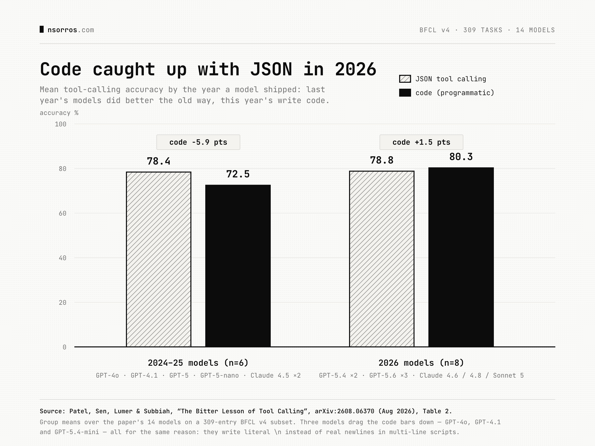

Programmatic tool calling beats native JSON tool…
When ChatGPT launched it was a very useful tool but lacked any agency, i.e. you could not easily get it to do stuff for you. Tools, and later on MCP, appeared as a means to solve that and connect AI to your device, your apps and the world. Tools were incorporated into AI in a relatively straightforward way, initially by prompting the model and later on by training it to use tools. As it turns out though, when models learned to write code proficiently, tool use became a by-product of that, meaning they could use tools without being trained on tool use in particular ✨
This is a recurring phenomenon in AI, so much so that it is referred to as the bitter lesson of AI. This is the loop where humans manually design a solution to an AI problem, only for AI to make that solution obsolete a few years later as it becomes more general. A more obvious example is how we used to train specialised models to read documents, transcribe speech and so on, all of which have been swallowed by the general models we now all use. Other than the philosophical point here though, there are some real gains in this transition from explicit tool use to code which I want to touch on.
The human-designed tool use process required the AI to call tools almost one at a time, because the AI was given the available tools and returned the ones it wanted to use and with what arguments. This is quite slow and more error prone than the alternative that coding models have enabled: writing a small code snippet that calls all the tools needed, in parallel or in sequence, and returns just the result the AI needs 🏎️
💡This transition is quite new: models from last year performed better with the traditional way of using tools, so it's only this year that coding models have made the old way obsolete. So as you are implementing your agentic use cases, keep in mind that all you need is a coding model (and a harness, but that is another post).
